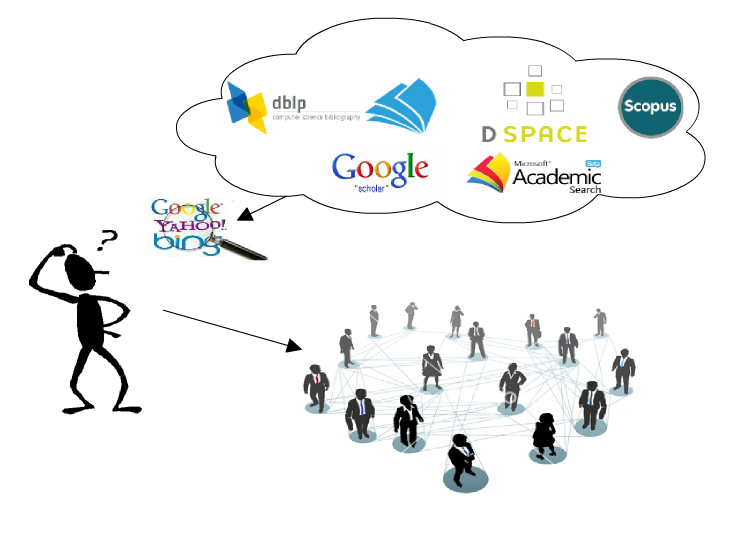
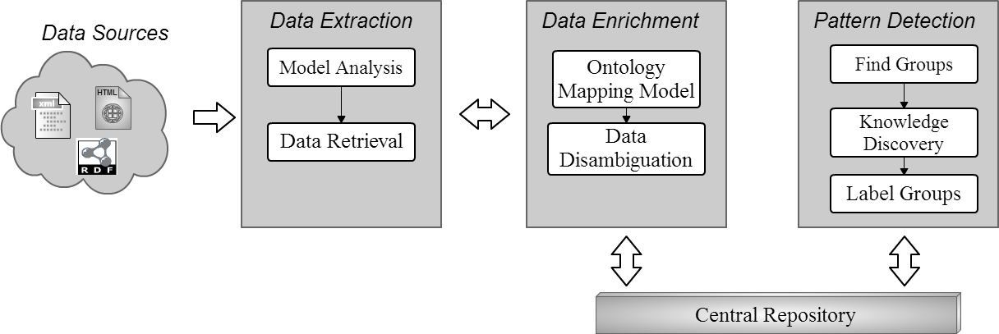
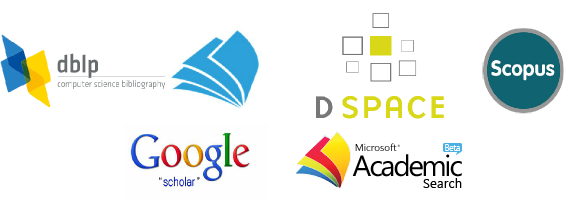
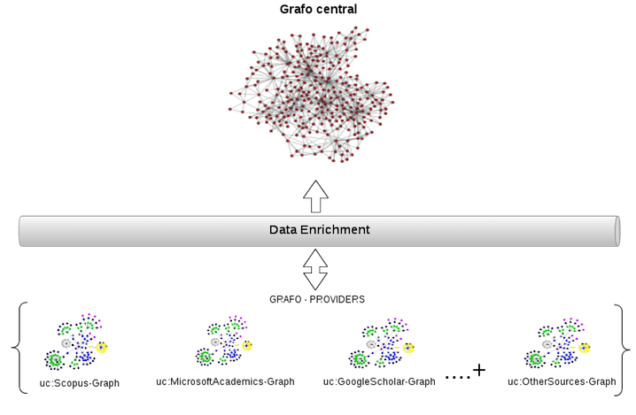
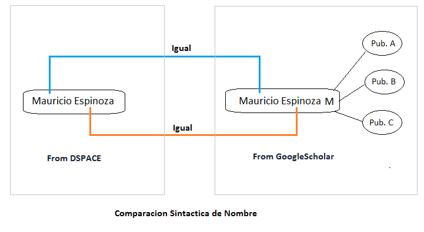
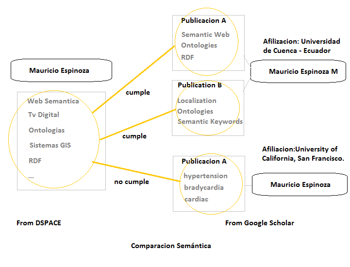
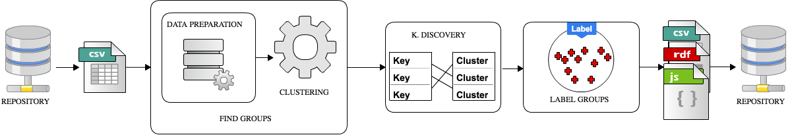
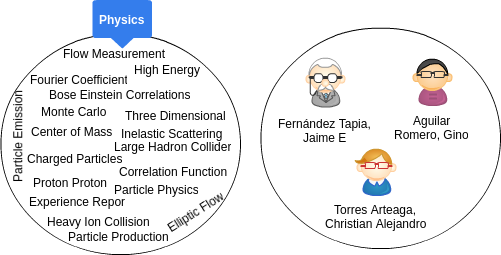

Detecting similar areas of knowledge using Semantic and Data Mining technologies

Introducción
- ¿Quién trabaja en líneas de investigación parecidas?
- ¿Cómo se puede crear una red de investigadores de un área en común, cuando no conocemos si estas existen?
- Obtener sus artículos, conocer revistas en las que fueron aceptados, entre otros.
Problemas comunes

Arquitectura General

Data Sources

Fuentes de datos bibliográficas
Data Extraction
Ejemplo de diferencia entre atributos de DBLP y el modelo de datos común.
DBLP fields |
Common model fields |
|---|---|
dblp:primaryElectronicEdition |
bibo:uri |
dblp:publishedAsPartOf |
dc:isPartOf |
dblp:publishedInBook |
dc:publisher |
dblp:authoredBy |
dc:contributor |
dblp:title |
dc:title |
dblp:pageNumbers |
bibo:numPages |
Data Enrichment
Mapeo del modelo de datos

Data Enrichment
Desambiguación de información.

Data Enrichment
Desambiguación de información.

Pattern Detection
Proceso para la extracción de conocimiento

Find groups detectar patrones de los datos almacenados en el repositorio central.
Knowledge Discovery asociar patrones a un formato legible por un humano. Se descubre redes de colaboracón y áreas de conocimiento.
Label Groups Se encuentra una etiqueta para cada cluster, ayuda a acelerar consultar y mantener la información organizada en el repositorio.
Pattern Detection
Extracto de resultados obtenidos

e debe tener en cuenta que para mejorar la calidad de los resultados, se debe mejorar la calidad de los datos de las diferentes bases bibliográficas para obtener aún mejores resultados.
Conclusiones
- Resultados están acorde a lo esperado, sin embargo, procesos como el de desambiguación y etiquetado necesitan un trabajo mas exhaustivo, debido a que aun se tienen ciertas inconsistencias en los resultados.
- Considerar que incluso para una persona es complicado determinar cierta información sobre un investigador o varios investigadores que pueden trabajar en conjunto. Por lo que aun es un reto a nivel computacional.
- Además como resultado se cuenta con un repositorio centralizado y se provee el uso de estos datos a cualquier persona.
Trabajos Futuros
- Incluir el abstract para analizar redes de colaboración.
- Mejorar el proceso de etiquetado.
- Analizar nuevos algoritmos de clustering o otras técnicas para encontrar agrupaciones.
¿Mas información?
Agradecemos a CEDIA por el apoyo brindado durante el transcurso de está investigación.